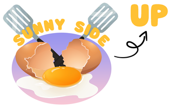

CaliGo!
CaliGO! Is a casual multiplayer game revolving around the company 'CaliGO!' being hired to rein in chaotic cats.
Play with up to 7 friends and work on behalf of 'CaliGO!' or cause mayhem wrecking the house as a cat.
Key Responsibilities
- Outlined and created the base line for the player state machine
- Handled the Game Manager which involved registering player information, syncing game scenes and states, and player scores/ results
- Designed and implemented a Lobby System that is intuitive and works using steam P2P connections
- Aiding other engineers in Core Networking Architectures & Protocols
- Managing the Github repository
Sunny Side Up

Sunny Side Up is an exploration and platforming game that sees you play as an ordinary egg in someone's fridge.
Try to escape from the looming fate of becoming their breakfast, and don't crack under the pressure.
Key Responsibilities
- Designed and implemented a player state machine to support rolling, jumping, and respawning
- Designed and implemented a Lobby System to join and host servers
- Developed networking using the Mirror package + Steam P2P API, enabling lobby creation/joining and synchronized multiplayer state across clients
- Built a modular state machine: IdleState -> LocomotionState -> RespawningState
- Integrated Steamworks.NET to establish peer sessions and used Mirror’s NetworkBehaviour methods to broadcast player transforms and RPC calls
Too Many Cooks

Key Responsibilities
- Designed and implemented an AI Assistant Chef using Goal-Oriented Action Planning (GOAP)
- Developed interactive kitchen systems, including object storage, stove operation, and utensil handling
- Created a GOAP-based AI framework allowing agents to dynamically plan actions based on environment state and goals
- Defined beliefs, goals, and actions: e.g., the “TurnOnStove” action requires proximity to a stove and fulfills the “MayhemSatisfied” belief
- Integrated Unity’s XR Interaction Toolkit and a desktop simulator to accelerate testing without a headset
- Implemented object state tracking and storage systems for realistic environmental interaction in VR
Ribbit Rush

Key Responsibilities
- Developed core gameplay systems, including player gravity and rotation mechanics
- Implemented a platform spawn manager to control obstacle spawning and level pacing
- Managed mobile build pipeline and deployment for iOS devices
- Made custom kinematic physics for the player to handle rotations and changes in gravity relative to the surface the player is on
- The platform spawn manager is a singleton that holds all spawn locations and calculates the spawn chance based on the duration of the run
- In retrospect, I should have also used object pooling to handle the instantiation of platforms, thereby optimizing performance
- Configured Unity Cloud Build (Mac environment) for iOS deployment. Created provisioning profiles and managed Apple Developer account for alpha distribution